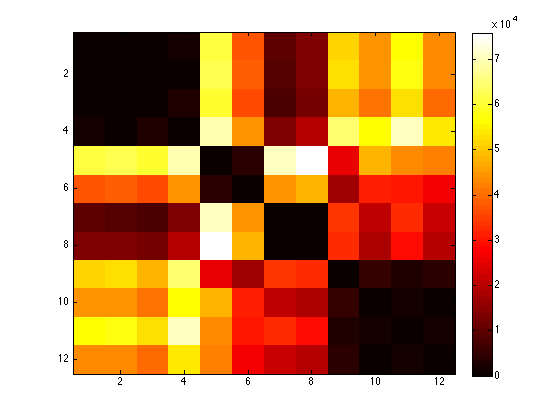

all_grayscale = [];
all_regular = [];
all_invariant = [];
all_x = [];
all_y = [];
all_z = [];
all_TRI = [];
folder = [];
no_of_img = [150 150 150 150 150 150 150 150 150 150 150 150];
center = [
75 75 75 1 1;
75 75 75 2 1;
75 75 75 3 1;
75 75 75 4 1;
75 75 75 5 2;
75 75 75 6 2;
75 75 75 7 2;
75 75 75 8 2;
75 75 75 9 3;
75 75 75 10 3;
75 75 75 11 3;
75 75 75 12 3;
];
invariant_with_fung_0 = [];
invariant_with_fung_1 = [];
invariant_with_fung_2 = [];
invariant_with_fung_3 = [];
invariant_with_fung_4 = [];
regular_with_fung_0 = [];
regular_with_fung_1 = [];
regular_with_fung_2 = [];
regular_with_fung_3 = [];
regular_with_fung_4 = [];
grayscale_with_fung_0 = [];
grayscale_with_fung_1 = [];
grayscale_with_fung_2 = [];
grayscale_with_fung_3 = [];
grayscale_with_fung_4 = [];
folder = [folder ; '../data/artifical_images/f1a'];
folder = [folder ; '../data/artifical_images/f1b'];
folder = [folder ; '../data/artifical_images/f1c'];
folder = [folder ; '../data/artifical_images/f1d'];
folder = [folder ; '../data/artifical_images/f2a'];
folder = [folder ; '../data/artifical_images/f2b'];
folder = [folder ; '../data/artifical_images/f2c'];
folder = [folder ; '../data/artifical_images/f2d'];
folder = [folder ; '../data/artifical_images/f3a'];
folder = [folder ; '../data/artifical_images/f3b'];
folder = [folder ; '../data/artifical_images/f3c'];
folder = [folder ; '../data/artifical_images/f3d'];
row_no = 1;
voxeldim = 0.414;
spacing = [0.414 0.414 0.414];
no_of_radii = 5;
radius_of_yeast = 10*voxeldim;
for q = 1:size(folder,1)
q
check = 1;
while check == 1
if(row_no <= size(center,1) && center(row_no,4) == q)
[temp_x, temp_y, temp_z, temp_grayscale, temp_regular, temp_invariant, temp_TRI] ...
= calculate(center(row_no,1:3), folder(q,:), voxeldim, no_of_img(q), spacing, no_of_radii, radius_of_yeast);
if(center(row_no,5) == 1)
invariant_with_fung_1 = cat(3,invariant_with_fung_1,temp_invariant);
regular_with_fung_1 = cat(3,regular_with_fung_1,temp_regular);
grayscale_with_fung_1 = cat(3,grayscale_with_fung_1,temp_grayscale);
elseif(center(row_no,5) == 2)
invariant_with_fung_2 = cat(3,invariant_with_fung_2,temp_invariant);
regular_with_fung_2 = cat(3,regular_with_fung_2,temp_regular);
grayscale_with_fung_2 = cat(3,grayscale_with_fung_2,temp_grayscale);
elseif(center(row_no,5) == 3)
invariant_with_fung_3 = cat(3,invariant_with_fung_3,temp_invariant);
regular_with_fung_3 = cat(3,regular_with_fung_3,temp_regular);
grayscale_with_fung_3 = cat(3,grayscale_with_fung_3,temp_grayscale);
elseif(center(row_no,5) == 4)
invariant_with_fung_4 = cat(3,invariant_with_fung_4,temp_invariant);
regular_with_fung_4 = cat(3,regular_with_fung_4,temp_regular);
grayscale_with_fung_4 = cat(3,grayscale_with_fung_4,temp_grayscale);
else
end
row_no = row_no + 1;
else
check = 0;
end
end
end
all = cat(3,invariant_with_fung_1,invariant_with_fung_2,invariant_with_fung_3,invariant_with_fung_4);
conf_all = squeeze(all)';
all_dist= dist2(conf_all,conf_all);
figure, imagesc(all_dist), colorbar, colormap hot, title ''
q =
1
q =
2
q =
3
q =
4
q =
5
q =
6
q =
7
q =
8
q =
9
q =
10
q =
11
q =
12

trainingSet = conf_all;
grouplabel = center(:,5);
sizeTraining = size(trainingSet,1);
for i=1:sizeTraining
test = trainingSet(i,:);
training = trainingSet;
training(i,:) = [];
group = grouplabel;
group(i,:) = [];
label = knnclassify(test, training, group);
display([num2str(i) 'th test case labeled as ' num2str(label) '']);
end
1th test case labeled as 1
2th test case labeled as 1
3th test case labeled as 1
4th test case labeled as 1
5th test case labeled as 2
6th test case labeled as 2
7th test case labeled as 2
8th test case labeled as 2
9th test case labeled as 3
10th test case labeled as 3
11th test case labeled as 3
12th test case labeled as 3